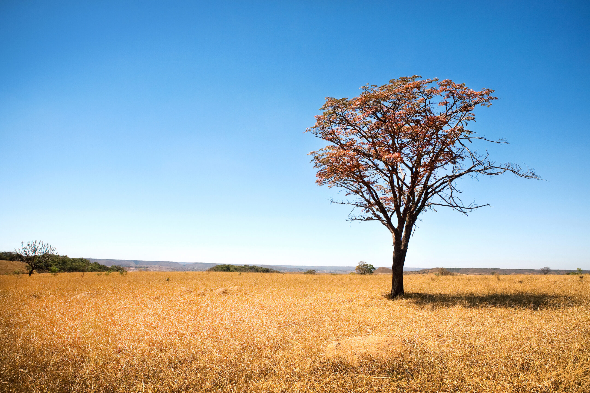
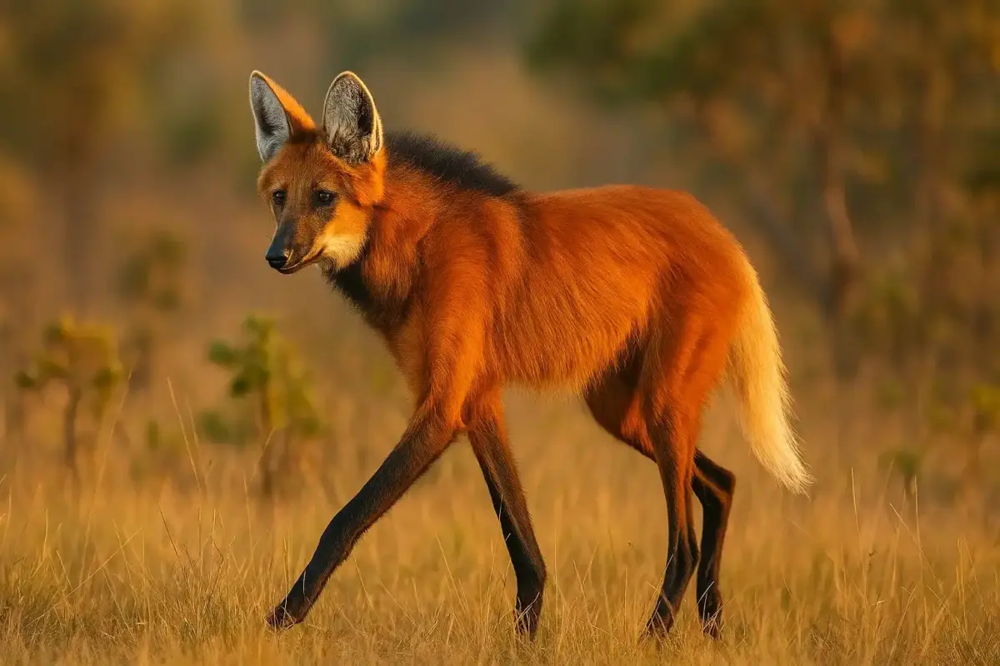
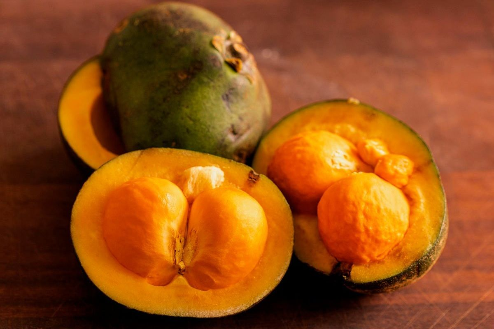
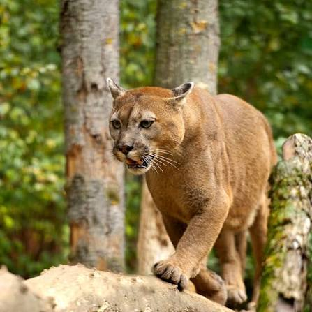
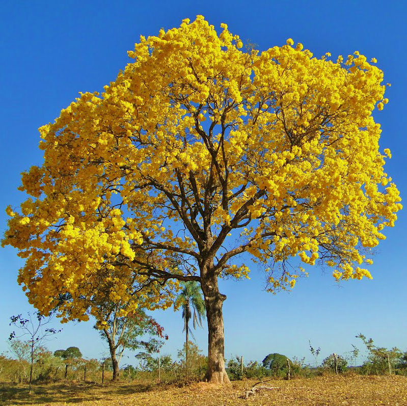

O Cerrado é frequentemente classificado como a savana brasileira por ser
o bioma do país que mais se assemelha às savanas africanas e australianas.
Ele é considerado a savana mais rica em biodiversidade do mundo, abrigando formas de vida únicas adaptadas a condições climáticas extremas.
Assim como outras savanas, o Cerrado possui uma formação mista.
Ele combina campos limpos de gramíneas com paisagens de árvores baixas, arbustos espalhados e troncos retorcidos. O bioma é definido por um clima tropical sazonal. Há um verão marcadamente chuvoso e um inverno severamente seco, característica típica das regiões de savana global.
O solo é naturalmente ácido e pobre em nutrientes. A vegetação evoluiu para resistir a incêndios naturais periódicos na época da seca, desenvolvendo cascas grossas e raízes profundas para rebrotar rapidamente.
A fauna do Cerrado é considerada a mais rica entre todas as savanas do mundo, abrigando mais de 320 mil espécies de animais com um alto índice de espécies que só existem na região. O bioma é marcado pela presença de grandes mamíferos e aves icônicas da biodiversidade brasileira, como o lobo-guará





Troncos tortos: As árvores possuem cascas grossas e galhos retorcidos, adaptações naturais contra incêndios e o clima seco.
Savana Rica: O bioma abriga mais de 11 mil espécies de plantas nativas e é considerado um hotspot mundial de biodiversidade.
Raízes profundas: Conhecidas como "floresta de cabeça para baixo", as raízes podem chegar a 15 metros de profundidade para buscar água.
Grandes Bacias :É chamado de "berço das águas" porque nele nascem os principais rios das bacias Amazônica, do São Francisco, da Prata e do Tocantins.
Abastecimento:o bioma sustenta oito das 12 regiões hidrográficas brasileiras.